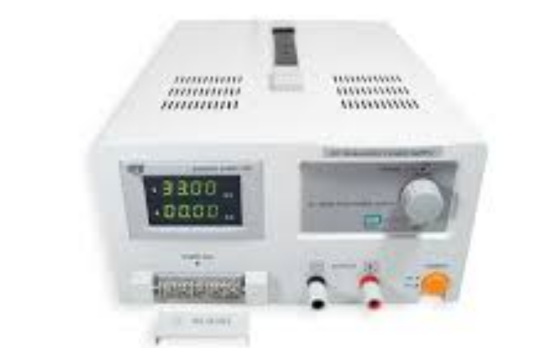

Ponte "H"
Projeto pronto desenvolvido no Thinkercad

Arduino
Peça de controle utilizada.

CI L293D
Peça utilizada como controle de direção

Motor CC
Servomotores propriamente ditos

Fonte de Mesa
Fonte de mesa variavel para controle da energia